Concierge Tools for Eclipse (CTE) |
To create a new project, simply invoke the "Concierge OSGi Project" wizard from the New Wizards dialog:
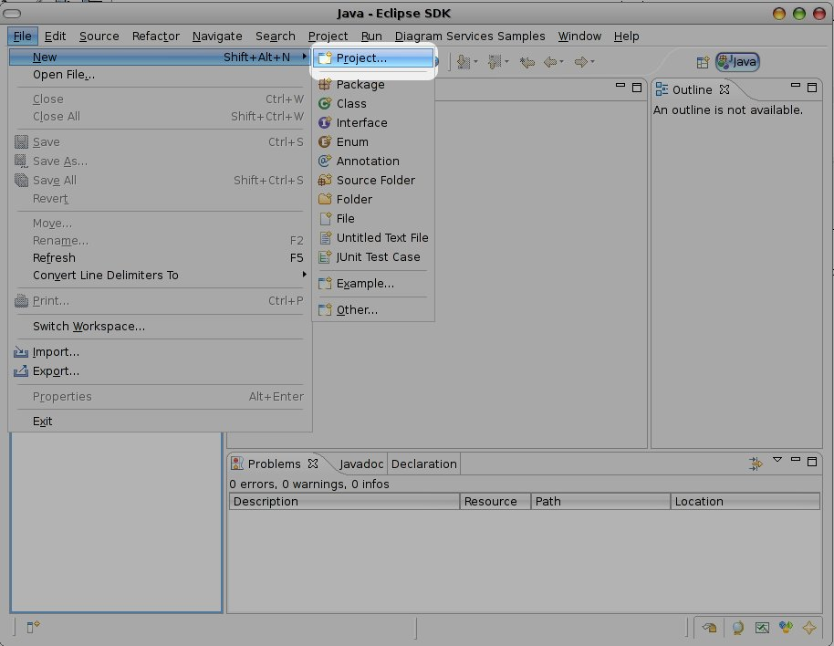Select the Concierge OSGi Project item from the New Wizards Dialog:
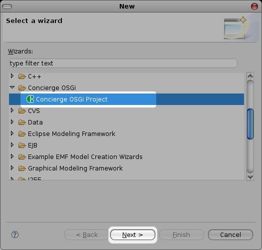Enter a name for the project and press Next:
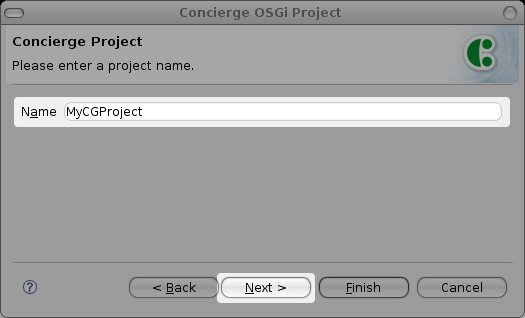Edit the properties for the bundle or accept the defaults and press Finish:
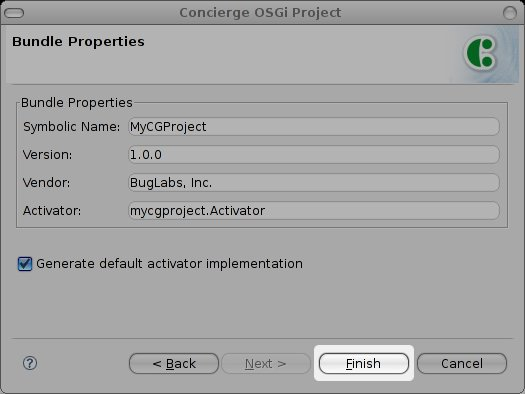Now you should see a project in the the package explorer:
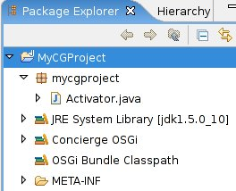Create a new Concierge OSGi Launch Configuration. Invoke the Debug... Launch configuration dialog:
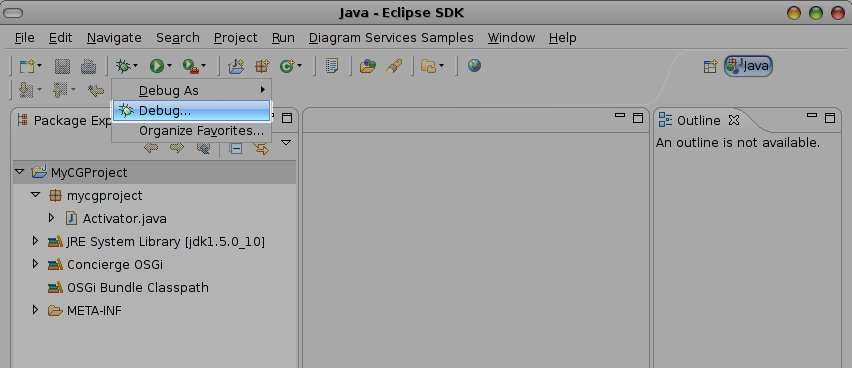Double click on Concierge OSGi Framework item (1). Set the name for the Launch Configuration (2). Determine which core bundles you want to use. If you are unsure, select all (3). Select your workspace bundles to execute (4). Press Debug to launch Concierge (4).
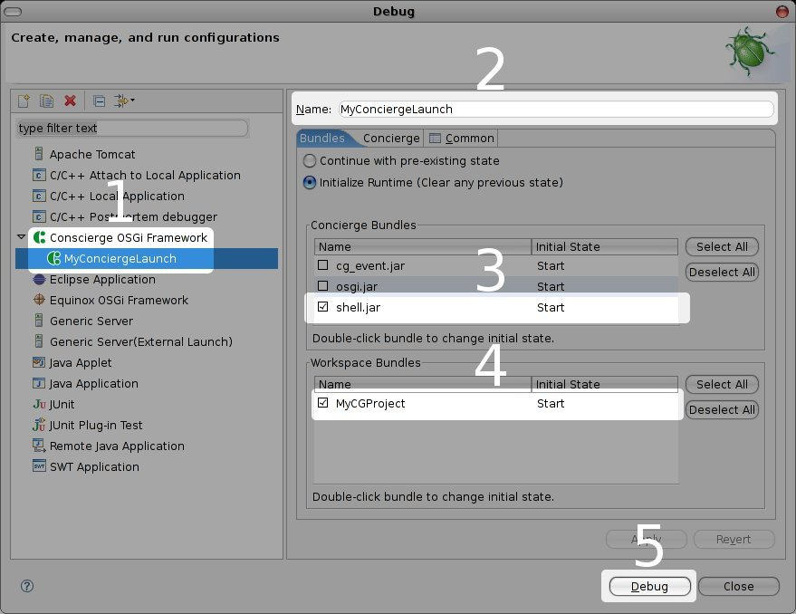The Concierge OSGi Shell is displayed in the console view:
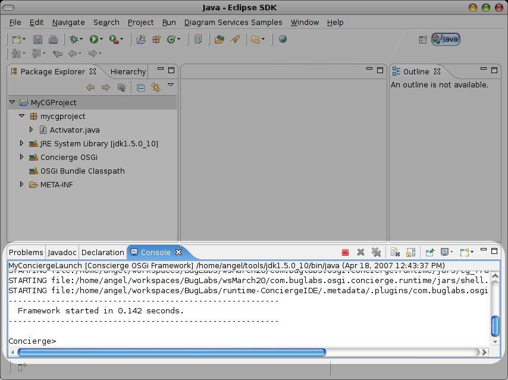Right-click on a Concierge OSGi project and select "Export...":
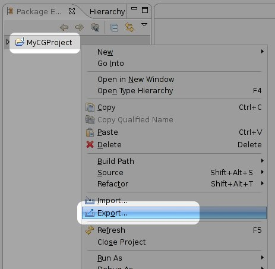Select Concierge OSGi -> Export Bundles, and then click Next.
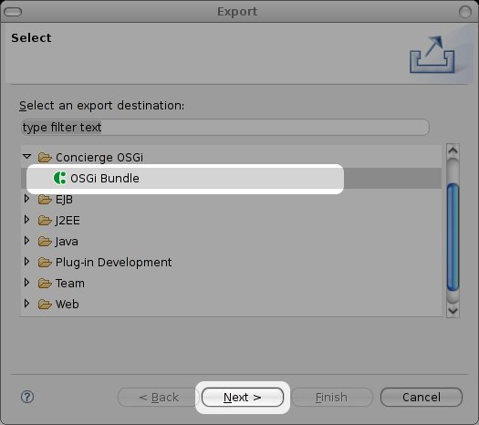Select a location to place the compiled bundles by selecting Browse.
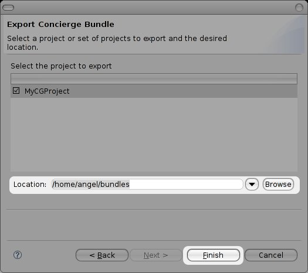Select Finish to compile the bundles.